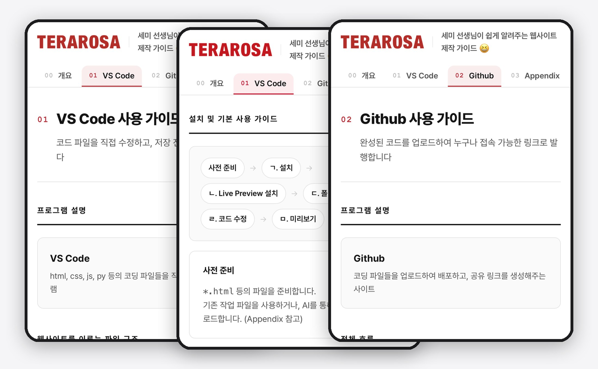
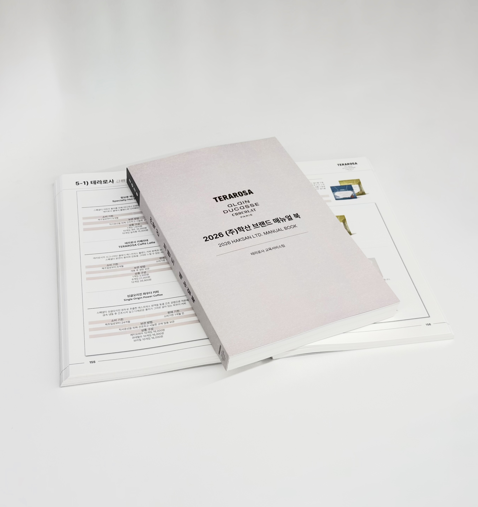
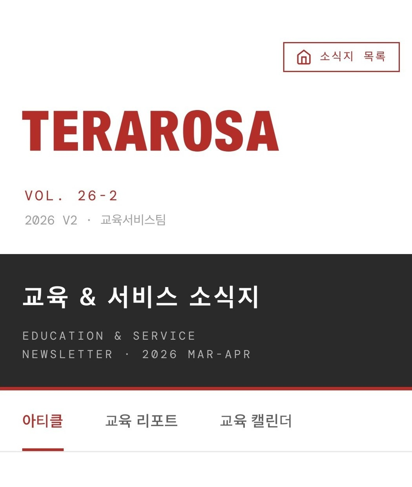

Selected Cases
진단하고, 직접 만들고,
수치로 증명했습니다.
1년 걸리던 랜딩이
3개월이 되기까지
연도별 온보딩 교육 인원 (명) · 2025년 체계 개편으로 월 1회 → 2회 채용 전환
1년 걸리던 랜딩이 3개월이 되기까지
원인은 개인의 역량 부족이 아니었습니다. 교육·실행·피드백이 단절된 구조였습니다.
- 3-3-2 순환 온보딩 설계 — 교육 총량은 그대로 두고 배치만 바꿨습니다. 현장에서 배울 때 더 효과적인 내용은 현장으로 보내고, 입사 교육 4일 → 3일, 직무 교육 8일 → 기초 3일 + 심화 2일로 재배치했습니다.
- 리더십 병행 설계 — 리더를 '가르치는 지시자'에서 '함께 만드는 코치'로 재정의하고, 반대하던 리더 한 명 한 명을 만나 설득했습니다.
- 사이클 월 1회 → 2회 전환 — 같은 인원·예산으로 두 배의 신입을 받는 구조가 됐습니다.
최대 1년 → 3개월
소프트랜딩
99명 → 209명
인원이 두 배가 되어도 품질이 흔들리지 않는, 확장 가능한 구조라는 뜻입니다. 숫자보다 값진 변화는 공기였어요. 도제식이던 현장이 서로 쉽게 돕고 도움받는 분위기로 바뀌었다는 피드백, "구조를 바꾸면 문화가 따라온다"는 걸 배운 프로젝트입니다.
온보딩을 하나의
제품으로 만들었어요

온보딩을 하나의 제품으로 만들었어요
떠나기 쉬운 사람들을 붙잡는 건 급여도 복지도 아니었습니다. 데이터가 가리킨 우리만의 강점은 '교육 시스템'이었습니다.
- 온보딩 웹앱 직접 개발 — 코딩 경험이 없었지만 AI를 활용해 만들었습니다. 이름을 입력하면 그 이름이 페이지 곳곳에 나타나는 환영받는 느낌을 설계하고, 진행률 게이미피케이션을 넣었습니다.
- 결과 자동화 — 수기로 진행하던 필기시험·설문을 연결하고 저장부터 가공까지 자동화했습니다. 익일에야 나오던 결과가 교육 종료 당일에 나옵니다.
- 셀프서브 기술 가이드북 (0→1) — 제작 과정을 기록해 누구나 AI로 자기 도구를 만들 수 있도록 전사에 배포했습니다.
- 임원진 대상 AI 활용 교육 진행 — 한 사람의 실험이 조직의 표준이 되는 경로를 만들었습니다.

직접 개발한 온보딩 웹앱 (좌) / 셀프서브 기술 가이드북 (우)
익일 → 종료 당일
긍정 응답 중 20% → 40%
가장 뿌듯했던 건 제 결과물이 아니었습니다. 가이드북을 읽은 동료가 엑셀로 공유하던 데이터를 웹 대시보드로 직접 만들어 배포했어요. 제가 직접 하지 않아도 동료들이 알아서 만들어내는 운동장이 생긴 순간, 도구는 문화가 됩니다.
우리다운 것이
흐려지기 전에

우리다운 것이 흐려지기 전에
문화가 말로만 전해지면 전설처럼 변형됩니다. 전사에 '우리다운 것'이 무엇인지 정의조차 없었습니다.
- 브랜드 매뉴얼북 단독 기획·집필 (0→1) — 브랜드의 가치와 조직 문화, 점포 매뉴얼, 각 부서가 공유하고 싶은 내용까지 298p 한 권에 담아 약 1년간 주도적으로 만들었습니다. 흔들리지 않아야 할 기준을 종이에 고정한 것입니다.
- 미디어 기반 직무 교육 체계 (0→1) — 책자보다 폰이 익숙한 동료들에게 "더 열심히 읽으세요"라고 요구하는 대신, 손이 자주 가야 하는 직무 파트는 과감히 간략화하고 Premiere Pro를 독학해 직무 교육 영상 12편을 기획·촬영·편집해 QR로 연결했습니다. 기준은 종이에, 소비는 폰에.
- 장비가 없으면 찾아냈습니다 — 사양 문제로 아무도 시작하지 않을 때, 사무실에 방치된 아이맥의 구입 이력을 추적해 사용 허가를 받고 시작했습니다. 이를 인정받아 2026년 전사 시무식 영상도 전담했습니다.
- 사내 커뮤니케이션 채널 구축 — 웹 기반 사내 소식지를 단독 제작한 뒤 팀에 이관해, 제가 없어도 굴러가는 채널로 남겼습니다.

298p 브랜드 매뉴얼북 내지 — 브랜드 히스토리·철학부터 영상 매뉴얼·실무 가이드까지 (QR은 사내 자료라 가림)

독학으로 제작한 직무 교육 영상 (좌) / HTML·CSS로 구축한 사내 소식지 (우)
단독 기획·집필
기획·촬영·편집
최초 문서화
이제 신규 입사자는 입사 첫날 이 책을 읽는 시간으로 회사 생활을 시작합니다. 부서 간 소통에서도 "매뉴얼북 4-5에 따르면"이라는 화법이 자리 잡았어요. QR로 연결된 영상들은 랜딩을 1년에서 3개월로 줄이고도 품질을 지킬 수 있게 한 안전장치가 됐습니다. 문화를 문서로 만드는 일은 박제가 아니라 번역이라고 생각합니다.
선배님이
세미님이 되기까지
박세미입니다"
한 달 차이로 선배와 후배가 갈리던 호칭을, 4년에 걸쳐 전 현장 '님'으로
선배님이 세미님이 되기까지
인사팀은 공지 채널로 "이제 '님'으로 부르자"고 알렸습니다. 그리고 아무 일도 일어나지 않았어요.
- 왜 아무도 안 따랐나 — "선배님"이라 높여 부르던 사람을 어떻게 "님"으로 낮춰 부르나요. 낮춰 불리게 되는 쪽이 먼저 괜찮다는 걸 보여주지 않으면 누구도 시작할 수 없는 구조였습니다. 인사팀이 제도를 만들었다면, 현장의 사람을 직접 만나는 건 교육팀의 일이었어요.
- 제가 먼저 '세미님'이 됐습니다 — 도제식 문화에서 커피를 가르치는 사람은 동경의 대상입니다. 가장 높여 불릴 자리의 사람이 먼저 내려오면 나머지가 따라올 수 있다고 봤어요. 교육 자리에서 "선배님"도 "선생님"도 아닌 "세미님이라고 불러 주세요"라고 소개했습니다.
- 새로 들어오는 물부터 바꿨습니다 — 1~2년 차 비율이 유독 높은 업계라, 굳어진 사람을 설득하는 대신 매달 합류하는 신규 입사자가 첫날부터 '님'을 쓰게 했어요. 온보딩이 그 입구였고, 저는 그 입구를 쥐고 있었습니다.
- 리더들 사이에는 '분위기'를 만들었습니다 — 저보다 선배인 리더를 먼저 "OO님"이라 부르고, 친분 있는 리더부터 바뀐 호칭을 쓰는 모습을 보여 주자 다른 리더들이 "저게 지금 우리 분위기인가?" 하고 느끼기 시작했어요. 규칙으로 강제하는 대신, 이미 그렇게 되어 가는 것처럼 보이게 만든 것입니다.
진짜 성과는 호칭이 아니었습니다. 신입들이 훨씬 쉽게 동료에게 다가가 질문하고 도움을 구합니다. 2~3년 차는 "선배"라는 부담에 짓눌리지 않고 새로 온 사람을 후배가 아니라 함께 뛰는 동료로 느끼고요. 대부분은 현장을 돌 때 먼저 다가와 "이렇게 바뀌어서 감사하다"고 말해 준 사람들에게서 알게 됐습니다. 제도는 공지로 시작되지만, 문화는 누군가 먼저 그렇게 사는 걸 보여줄 때 시작됩니다.